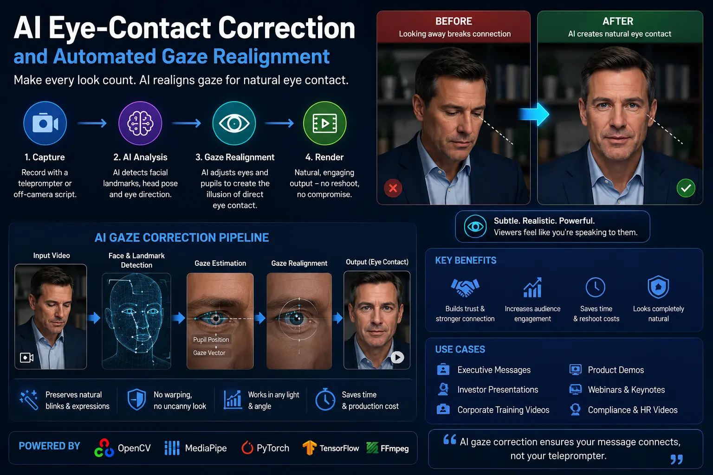
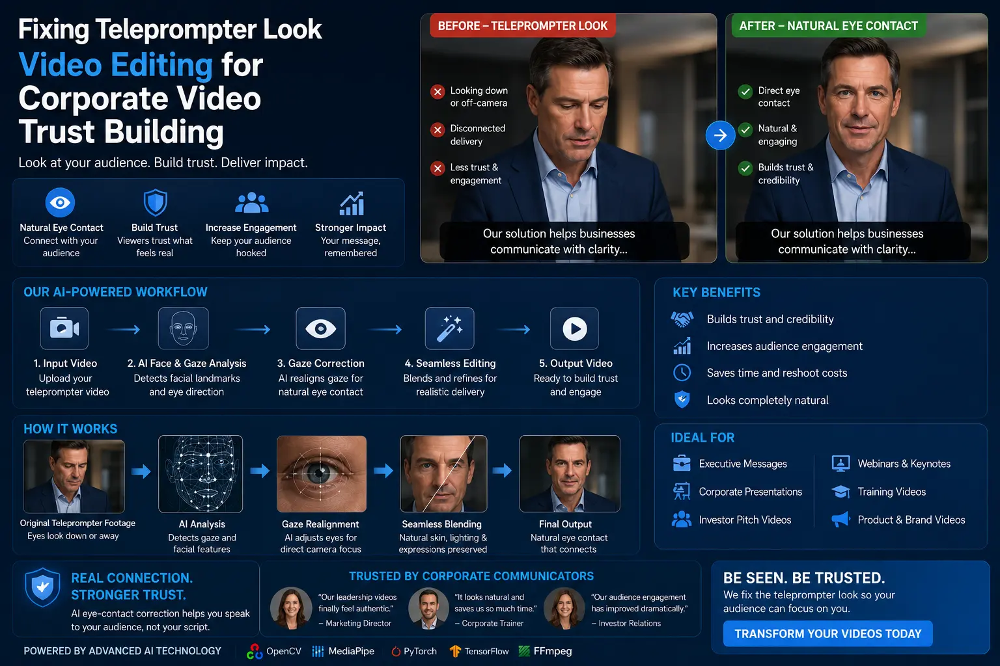

Deploying AI Eye-Contact Redirection for Script-Heavy Executive Videos
The C-Suite Communication Dilemma in Modern Media Production
In today's hyper-connected business landscape, chief executive officers, founders, and corporate leaders are regularly required to deliver long-form, script-heavy video presentations. Whether addressing international shareholders during quarterly earnings announcements, presenting complex regulatory filings, articulating multi-year strategic roadmaps, or launching enterprise product lines, executives must communicate intricate metrics with pinpoint precision. However, memorizing multi-page technical documents is rarely feasible for busy corporate leaders.
Consequently, corporate media production teams rely heavily on teleprompters, side-mounted confidence monitors, and digital script displays. While these prompter systems solve script fidelity, they introduce a pervasive aesthetic and psychological flaw known as the teleprompter look. When an executive scans horizontal lines of scrolling text, their ocular gaze continually tracks away from the optical center of the camera lens. Even when teleprompter glass is positioned directly in front of the lens, slight angular deviations create a subtle, off-axis gaze that subconscious audiences instantly interpret as unnatural or disengaged.
Fortunately, breakthrough advancements in deep computer vision and generative neural models have introduced AI Eye-Contact Correction into modern video editing workflows. By applying Automated Gaze Realignment, enterprise content creators can now process script-heavy recordings and dynamically redirect the speaker's pupils back toward the camera lens. This technological shift resolves the age-old tension between verbatim script accuracy and authentic visual connection, establishing a new benchmark in Corporate Media Asset Governance.
The Psychology of Gaze: Why Visual Alignment Matters
Human social cognition is fundamentally wired to evaluate authority, trustworthiness, and emotional transparency through eye contact. In face-to-face interactions, direct ocular engagement triggers positive neurochemical responses that reinforce credibility. In digital media, the camera lens serves as the direct proxy for the viewer's eyes. When an executive appears to look slightly above, below, or to the side of the camera lens, the human brain registers a non-verbal micro-disconnect.
Research into audience visual retention indicates that viewers form subconscious judgments regarding executive credibility within the first three seconds of video playback. When an executive exhibits rapid side-to-side eye movement while reading off-screen notes, audience retention drops sharply, and perceived authenticity diminishes. Mastering techniques for fixing teleprompter look video editing is therefore not merely a cosmetic choice; it is an essential strategy for corporate video trust building.
Furthermore, enterprise organizations producing high-stakes video collateral must uphold strict quality standards across all corporate channels. Implementing AI gaze direction correction guarantees that regardless of recording conditions, camera placement, or prompter distance, executive talent consistently projects composure, confidence, and unwavering connection with internal and external stakeholders.
How Artificial Intelligence Realigns Human Gaze
Neural gaze redirection relies on sophisticated deep-learning models trained on tens of thousands of hours of high-resolution human facial datasets. Unlike primitive digital manipulation techniques that stretched or warped static video frames, modern AI facial alignment engines construct an interactive, three-dimensional geometric mesh of the speaker's face.
The software identifies key facial landmarks—including iris perimeters, pupil centers, sclera boundaries, upper and lower eyelid curves, and surrounding skin geometry. The neural network then calculates the exact angular discrepancy between the speaker's current gaze vector and the virtual optical center of the camera. Using real-time or post-production GPU acceleration, such as the NVIDIA Broadcast eye contact effect, the algorithm synthesizes photorealistic digital pupils that are continuously re-projected onto the speaker's eyes.
Modern neural gaze correction models incorporate several critical features to ensure visual realism:
- Subtle Catchlight Preservation. Real human eyes reflect ambient studio lighting. Advanced neural networks isolate existing specular reflections (catchlights) and project them onto the newly synthesized pupils, preventing flat or dead digital eyes.
- Natural Blinking Synchronization. When a speaker blinks, the AI algorithm dynamically pauses gaze redirection, allowing natural eyelid closure without visual tearing, artifacting, or popping.
- Organic Ocular Drift. Perfect, motionless eye contact can look synthetic and robotic. Next-generation neural models introduce imperceptible micro-saccades and natural ocular drift, mimicking authentic human eye behavior.
- Iris Color & Texture Consistency. Deep learning models sample the speaker's natural iris pigmentation, limbal ring definition, and sclera vascularity, guaranteeing that the synthesized gaze perfectly matches the executive's physical features.
Uncompromised Authority
Maintain direct, authoritative eye contact with your audience while seamlessly reciting complex financial data, legal disclosures, and technical roadmaps.
Reduced Recording Hours
Eliminate costly reshoots and exhausting multi-take studio sessions by allowing executives to comfortably read complete scripts without worrying about off-camera eye gaze.
Enterprise Scalability
Standardize executive video quality across regional offices, international subsidiaries, and distributed leadership teams using automated post-production pipelines.
Enhanced Viewer Retention
Boost audience engagement and watch time by eliminating off-axis visual distractions that cause viewers to lose focus during corporate broadcasts.

Integrating Gaze Redirection into Enterprise Post-Production Pipelines
While AI Eye-Contact Correction is immensely powerful, achieving flawless results requires a holistic approach that combines intelligent on-set setup with refined post-production workflows. Deploying AI tools in isolation without proper recording hygiene can result in uncanny valley artifacts, especially when executives exhibit extreme head movements or severe eye offsets.
Professional production studios implement comprehensive executive video polish hacks to maximize algorithm performance:
- Minimize Physical Teleprompter Offset. Position the prompter hardware as close to the physical lens axis as possible. Reducing the native offset angle from 20 degrees to under 8 degrees significantly lowers the computational load on the AI engine, ensuring seamless pupil synthesis.
- Eye-Level Studio Lighting. Position key lights and fill softboxes at eye level to create clear, defined iris boundaries and vibrant catchlights. Clear ocular illumination drastically improves neural landmark tracking accuracy.
- Optimized Camera Focal Lengths. Avoid ultra-wide angle lenses that distort facial geometry. Shoot executive talent with medium telephoto focal lengths (50mm to 85mm) to flatten facial perspective and provide stable geometry for AI facial alignment.
- Layered Post-Production Polish. Combine AI gaze direction correction with subtle skin tone balancing, noise reduction, dynamic zoom cuts, and neural audio enhancement to deliver a pristine, broadcast-ready final master.
1. AI Gaze Engines
- NVIDIA Broadcast Tensor Core Engine.
- Descript AI Eye Contact redirection.
- Captions AI Gaze Correction algorithm.
- DaVinci Neural Studio gaze trackers.
2. Studio Setup Protocols
- On-axis beam-splitter teleprompters.
- Diffused eye-level softbox key lighting.
- 85mm prime lens for natural depth.
- 4K RAW capture for maximum detail.
3. Post-Production Finishing
- Neural iris catchlight preservation.
- Automated blink mask smoothing.
- Cinematic Rec.709 color grading.
- Multi-channel audio noise reduction.

Corporate Media Asset Governance and Strategic Standards
As artificial intelligence becomes deeply integrated into corporate video creation, maintaining rigorous Corporate Media Asset Governance is critical. Organizations must establish clear guidelines defining how AI enhancements are applied to C-suite talent. Gaze redirection should always preserve the executive's natural physical identity, avoiding aggressive alterations that compromise authentic human warmth.
At The PhD Ads, located in Madurai, we specialize in high-end video production workflows that combine cutting-edge technology with creative mastery. Our post-production specialists employ sophisticated algorithms, including the NVIDIA Broadcast eye contact effect and custom AI Eye-Contact Correction pipelines, to polish executive presentations, investor pitches, and corporate brand videos. By systematically resolving the teleprompter look, we empower business leaders to communicate complex strategies with confidence, clarity, and undeniable trust.
Combining Automated Gaze Realignment with tailored studio lighting, crisp audio engineering, and elegant motion design ensures that your corporate media assets stand out in a noisy digital ecosystem. When executives maintain effortless, direct eye contact with their audience, every message resonates with greater impact, authority, and emotional connection.
Key Topics
Ready to Polish Executive Videos with Seamless AI Eye-Contact Alignment?
At The PhD Ads in Madurai, we combine advanced AI Eye-Contact Correction, Automated Gaze Realignment, and expert fixing teleprompter look video editing to transform script-heavy executive communications into powerful, trust-building media assets. Let our team elevate your executive presence and corporate media strategy.
Email: team@e2o.in